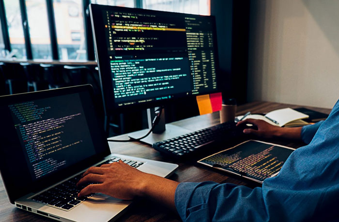
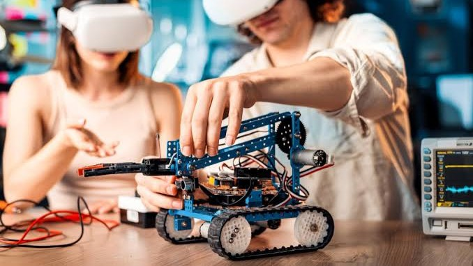
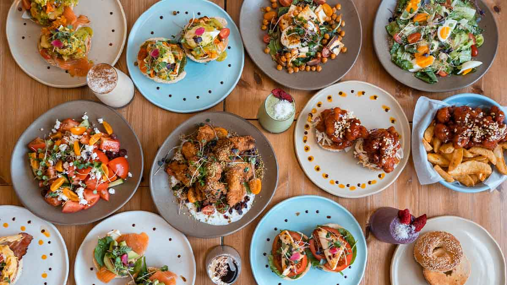
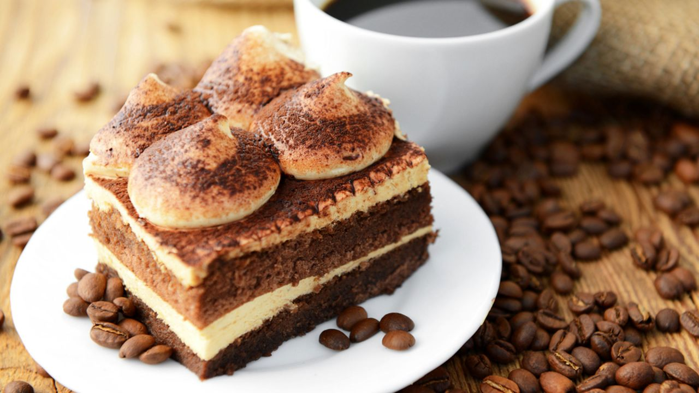
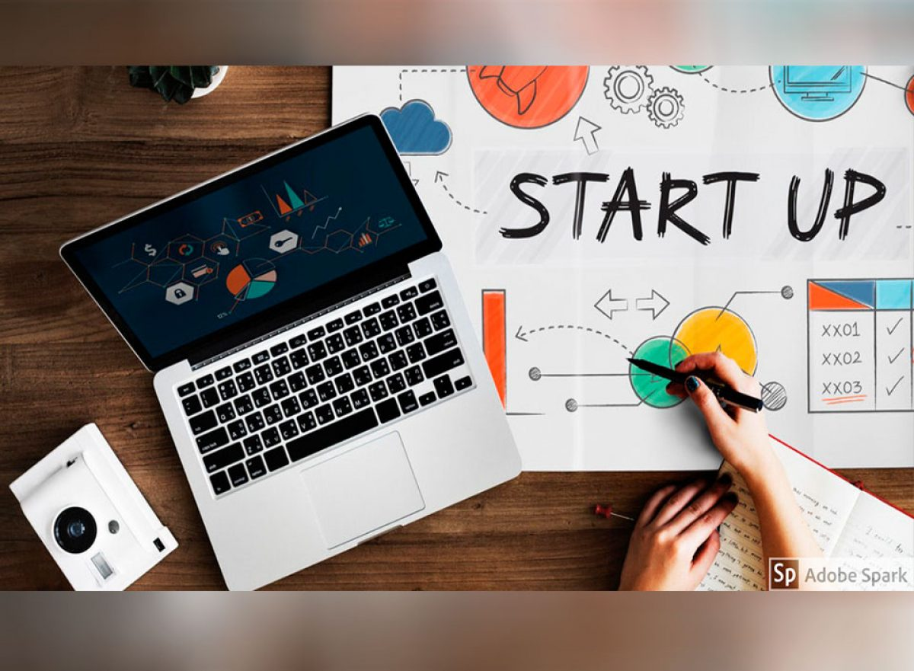
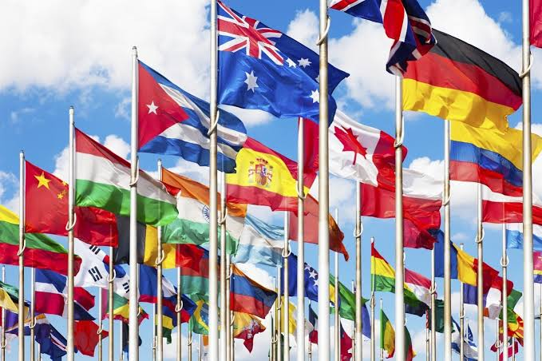
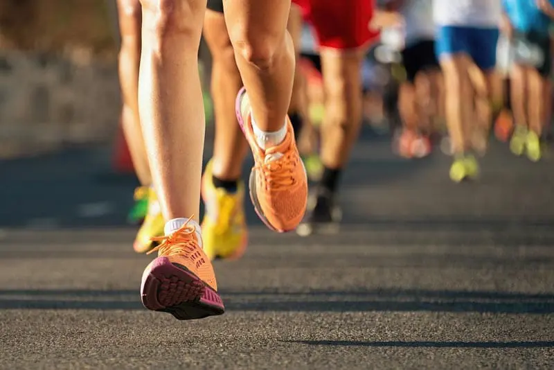
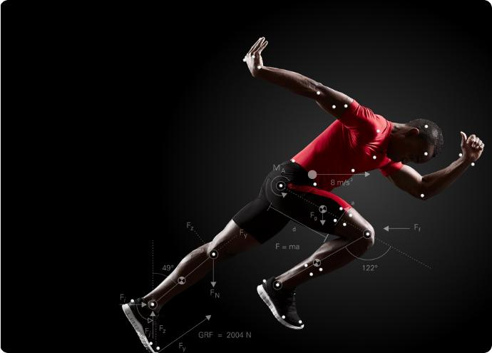

TecnológicoIngeniería de Sistemas
Presentación de proyectos de software, inteligencia artificial y aplicaciones móviles.
Conoce a los participantes y sus propuestas.

TecnológicoPresentación de proyectos de software, inteligencia artificial y aplicaciones móviles.

TecnológicoRobots autónomos, automatización y programación en un solo lugar para demostraciones con expertos.
Demostraciones de hacking ético y protección informática para cualquier entusiasta de la computación.

GastronómicoDegustaciones, cocina internacional y la oprtunidad consultar a nuestra chef experta sobre sus mejores recetas.

GastronómicoPostres artesanales y café de especialidad. Sé parte de una convivencia tranquila mientras degustas delicias.
 Artístico
Artístico
Exposición de ilustración, fotografía y diseño. El arte desde lo tradicional hasta el mundo digital.
 Artístico
Artístico
Instrumentos, presentaciones musicales, pruebas y curiosidades sobre todo lo relacionado con la música que disfrutamos.

CulturalStartups estudiantiles e innovación empresarial. Pequeñas y valiosas lecciones impartidas por expertos en el área.
 Cultural
Cultural
Historia institucional y patrimonio universitario. Exhibición y charlas sobre algunas de nuestras más valiosas reliquias

CulturalIntercambio cultural y aprendizaje de los principales idiomas que influyen en el mudndo.

DeportivoPromoción del deporte y vida saludable. Tips para todas las edades y prácticas en vivo con guía de expertos.

DeportivoEvaluación física, entrenamiento y fisiología deportiva. Una vista más detalla sobre nuestra mecánica interna.
No se encontraron stands con esos filtros.